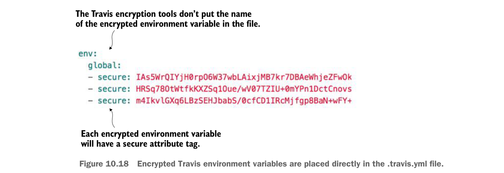

AWS_SECRET_KEY—AWS secret key used by the Amazonecs-clicommand-line client.GITHUB_TOKEN—GitHub generated token that’s used to indicate the access level the calling-in application is allowed to perform against the server. This token has to be generated first with the GitHub application.
Once the travis tool is installed, the following command will add the encrypted environment variable DOCKER_USERNAME to the env.global section of you .travis.yml file:
travis encrypt DOCKER_USERNAME=somerandomname --add env.globalOnce this command is run, you should now see in the env.global section of your .travis.yml file a secure attribute tag followed by a long string of text. Figure 10.18 shows what an encrypted environment variable looks like.
The Travis encryption tools don’t put the name of the encrypted environment variable in the file.

Each encrypted environment variable will have a secure attribute tag.
Encrypted Travis environment variables are placed directly in the .travis.yml file.
Unfortunately, Travis doesn’t label the names of your encrypted environment variables in your .travis.yml file.